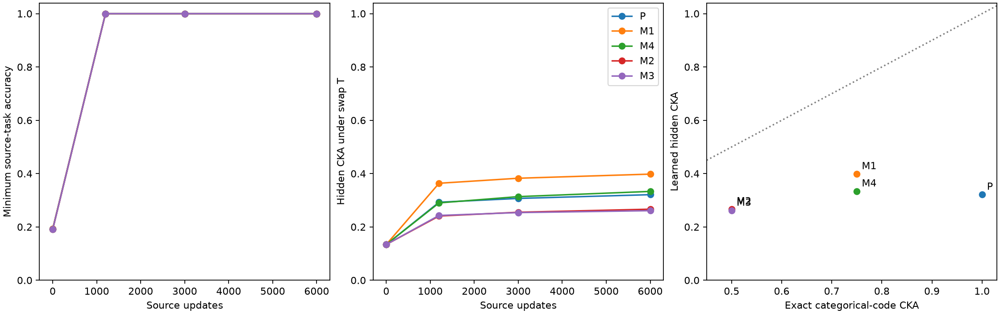

模型已完成 45/45，源任务门槛通过 45/45；报告更新于 2026-10-05T14:35:05.283077+00:00。三个可逆输入基变换与三个初始化构成九个配对设置，5 种源组合共享输入、初始化、训练更新数与每任务曝光。
输入为完整 F5⁴ 的 625 点。P 组合输出 z1、z2、z3、z4；Mk 输出 z1、z2、z3、z3+k·z4，本轮 k=1, 4, 2, 3。所有组合都是四个独立任务，秩均为 4，完整源答案联合分布均为 625 个等概率状态，每列均匀、每对互信息为零。完整输出分布也严格匹配；所有源答案联合起来都保留全部输入信息。
同一输入变换 T 交换 z3、z4。在单独编码每个源答案的独热特征中，P 保留四个任务方向；M1、M4 保留三个；M2、M3 保留两个。由有限域字符方向正交性可精确推出独热核 CKA 为 1、0.75、0.5。训练前登记的待检验预测是：隐藏表征是否也出现 P > 平均(M1,M4) > 平均(M2,M3)。精确公式仅适用于指定的理想源答案编码，不能直接当成学习后隐藏层的定理。

| 源组合 | 理想答案核预测 | 隐藏 CKA | 源字符方向方差比例 | 源学习门槛 |
|---|---|---|---|---|
| P | 1.00 | 0.3210 | 0.343 | 9/9 |
| M1 | 0.75 | 0.3981 | 0.396 | 9/9 |
| M4 | 0.75 | 0.3332 | 0.343 | 9/9 |
| M2 | 0.50 | 0.2665 | 0.388 | 9/9 |
| M3 | 0.50 | 0.2610 | 0.393 | 9/9 |
完整配对设置 9/9，其中满足所登记三层排序 3/9。每个设置内所有源组合的训练前隐藏表征完全相同，可排除不同初始表征造成的组间差异。逐设置差值和全部中间检查点均保留。
训练前协议记录：登记时间及冻结协议。数据生成与严格统计审计 · 结果汇总 · 逐模型结果 · 配对差值 · 全部曲线 · 核验 · PDF 图